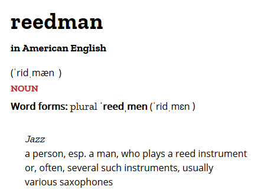
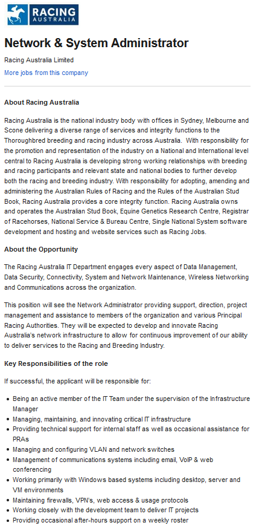

Name Ian McElwaine
Location Albury NSW Australia (AEST GMT+10)
Phone 0400 016 829
Email s3863018@student.rmit.edu.au
Website jove2001.github.io
Nationality Australian
Culture Regional NSW Australian
Languages English
Interests Computing; Reading; Astronomy and Astrophysics
Musician: A saxophonist and all-rounder aka a reedman
Source: Collins English Dictionary1
Guitar
I enjoy problem solving and using technology, and at it’s core IT is about using technology to find and implement solutions for human problems. Through the course of my work in the NSW public service I became interested in systems analysis and process design, databases, and user experience.
I’m also a musician, and I use IT tools to:
My dad bought a Commodore C64 when I was 8 or so, and I was immediately obsessed with it. Early on I mainly played games on it, but since it had a version of BASIC baked into the operating system I started to learn programming. I bought magazines with my pocket money that had pages of code that you typed in by hand. I noticed functions in the code and ‘borrowed’ them for my own programming projects.
By the mid-1990’s I had Amiga computers which I used for school homework, games, coding, music production, and creating bitmap graphics.
Lenny is a friend of my Dad. He's an industrial electronics technician. Circa 1993 he introduced me to analog and FM sound synthesis, MIDI sequencing, and so many other things. He's an inspirational guy who travelled across the African continent in a Volkswagen Beetle during the 1970's.
I've always been the 'tech guy' in the workplace, but I used to call myself an 'expert user' rather than an 'expert in IT'. A about ten years ago I decided I wanted to understand what was happening under the hood of a modern PC, so I started learning Linux/GNU. With help from the lovely people in the Ubuntu Forums, I installed Ubuntu Linux on a laptop and learnt about using the command line and the principles of Linux and GNU. When I was confident enough, I built a NAS as a test bed for server based applications, and as a home for my digital life.
My home IT setup looks like this:
I transitioned out of the corporate environment to a career as a saxophonist and guitarist around two years ago, but the current COVID crisis made me consider other options. I decided that studying the introduction courses for a Bachelor of Information Technology at RMIT would be a positive move for me.
I expect that by studying the Introduction to Information Technology course I will learn some of the skills of the IT professional and have a fuller understanding of the industry and the toolset. I’ve learnt a lot about website design and html by completing this website (my first assignment). The second assignment task will help me learn more about collaborating with group members (who may be physically located all over the world) using tools like Git. The third and fourth assignment tasks are about developing a project as a team. This will help me learn entrepreneurial skills of developing projects and pitching them to clients and investors.
My attitude to opportunity is similar to Richard Branson’s. In 2017 he said on his blog
“If somebody offers you an amazing opportunity but you are not sure you can do it, say yes – then learn how to do it later.” 2.
I don't know what opportunities are waiting for me in the future, but I know that an IT degree from RMIT will help me make the most of them. There are many different potential career opportunities that I'd be interested in. From being a founder in a start up, to leading a project management team for a corporate, I wouldn't rule anything out....
...but a Network and System Administrator is the unsung hero of the 21st Century. They maintain and repair the IT infrastructure of a business or organisation under great pressure at times. If business critical functions like online sales go offline, then a business may lose revenue. If a banks' software and hardware infrastructure fail to meet statutory requirements4, then penalties of up to $700 million5 can be incurred. The stakes are high at times!
I like the idea of caring for an IT system. Keeping it running and in optimal condition. I like the idea of forward planning and change management too. Designing and implementing new solutions for problems.
The experience I gained by building and running a Linux server at home was a great start, but the job description says that the servers and virtual machines are Windows based. I understand the Windows desktop well, but I haven't used Windows server before. I'd need more knowledge about networking before I could consider applying for this role. Completing a Bachelor of Information Technology should give me the skills and experience I need to succeed in this role.
Retrieved from Seek.com.au on 31 May 2020. PDF version HERE.
I recently took three different types of tests. Click the titles below to see the results.
I would teach children music, physics and philosophy; but more importantly music; for in the patterns of music and all the arts, are the keys to learning. – Plato
There are many benefits for kids by learning music. A music education ‘improves confidence, self-expression and fosters creativity.”6 Unfortunately many Australian kids don’t get a quality music education at school.6 From my ten years of experience as a music tutor I know that even if kids are given the opportunity to learn a musical instrument they may resist. Kids have told me that they couldn’t make a connection between the instrument they are learning and the music they hear on Spotify, and for those used to instant digital gratification, the learning curve of a traditional musical instrument can be too steep. Thus, restricting music education to traditional musical instruments can be counter-productive. The dictionary definition of a musical instrument is “Anything that is used to produce music”7, so why should we limit kids creativity to the musical instruments of centuries past?
Most modern music producers use a Digital Audio Workstation (DAW) and Virtual Studio Instruments (VSI) to create their art, but there are very few accessible options available for young musicians to learn how to use these. There are commercial products available that meet some of the needs of young people, for example, Garage Band is free to users of iOS and MacOS8, but the cost of an Apple device can be prohibitive which makes it less accessible9. The Volca series of retro-inspired synths and samplers are more affordable10, but are less attractive to digital natives. There are also DIY projects which include some of the proposed feature set of Minor Maestro, but need a level of expertise to construct, and are not part of a coherent platform.
Kids will get all the benefits of learning music and music production using a low upfront cost device. The Minor Maestro will encourage a new generation of musicians to create and share their work with their peers and to a worldwide audience. Any work submitted to the platform becomes available for users of the Minor Maestro to download and re-mix, and is available on a streaming service to reach a wider audience. Young producers may earn revenue from the streaming service and use of their work in advertising. This may drive user engagement even further.
1. Collins 2020, reedman, Collins Dictionary, viewed 17 June 2020, https://www.collinsdictionary.com/us/dictionary/english/reedman
2. Richard Branson 2017, Y is for Yes, Virgin, viewed 20 June 2020, https://www.virgin.com/richard-branson/y-yes
3. Seek 2020, Network and System Administrator, Seek, viewed 31 May 2020, https://www.seek.com.au
4. Ry Crozier 2020, CBA runs AI over 230,000 words of ASIC regulation, IT News, viewed 21 June 2020, https://www.itnews.com.au/news/cba-runs-ai-over-230000-words-of-asic-regulation-539687
5. AUSTRAC 2018, AUSTRAC and CBA agree $700m penalty, AUSTRAC, viewed 21 June 2020, https://www.austrac.gov.au/austrac-and-cba-agree-700m-penalty
6. Music Australia 2017, Music Is Good – Music Australia Advocacy Resource, Music Australia, viewed 21 June 2020, https://musicaustralia.org.au/program/countusin/about/resources/
7. Collins English Dictionary 2020, Musical Instrument, Collins English Dictionary, viewed 21 Jine 2020, https://www.collinsdictionary.com/dictionary/english/musical-instrument
8. Apple 2020, Garageband, Apple, viewed 21 June 2020, https://www.apple.com/au/mac/garageband/
9. Apple 2020, Macbook Pro, Apple Store, viewed 21 June 2020, https://www.apple.com/au/shop/buy-mac/macbook-pro/16-inch-space-grey-2.6ghz-6-core-processor-512gb/
10. Korg 2020, Korg Volca, Korg, viewed 21 June 2020, https://www.korg-volca.com/en/
11. 16 Personalities 2020, Free Personality Test, 16Personalities.com, viewed 21 June 2020, https://www.16personalities.com/free-personality-test
12. Education Planner 2020, Learning Styles Quiz, Education Planner, viewed 21 June 2020, http://www.educationplanner.org/students/self-assessments/learning-styles-quiz.shtml13. IQTest 2020, Free IQ Test, IQTest.com, viewed 21 June 2020, https://iqtest.com/
Website template
TemplateMo, 464 Ultra Profile, templatemo.com, viewed 27 May 2020, https://templatemo.com/tm-464-ultra-profile
Toolset
This website was created with Brackets.io, Github Desktop, Focuswriter, and Paint.net
Follow me on
Facebook
Follow my work on
Github
Check out my photos on
Instagram